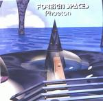

| Artist: | Foreign Spaces |
| Title: | Phaeton |
| Label: | self produced ISCD 020007 |
| Length(s): | 71 minutes |
| Year(s) of release: | 2000 |
| Month of review: | [07/2001] |
| 1) | Phaeton I - Planet | 17.40 |
| 2) | Blue Stream | 4.38 |
| 3) | Moonless | 4.06 |
| 4) | Silver Glider | 3.17 |
| 5) | Phaeton II - Lifeforms | 21.18 |
| 6) | Spheric Architecture | 5.16 |
| 7) | Articifical Encounter | 7.23 |
| 8) | White Sunset | 3.44 |
| 9) | Phaeton III - Utopia | 4.17 |
Blue Stream has a bit of everything. It opens well with strong loop and over that lots of variation. The track has both some mellow, some screamy and some triumphant aspects.
After a dreamy but percussive opening Moonless has quiet subdued sequencing and again a lot fof high in the music. The music has something of desert music, but the melodies are bit boring.
Lighter and more optimistic is Silver Glider. The melody is okay, but it is based on this one single theme. On the other hand, the long Phaeton II - Lifeforms has plenty of those, strung together as so many hams. Actually this track is really fragmentary, some themes are okay, some are not which is a shame. The bad themes always win.
Again nice melodies on Spheric Architecture, but the sound of the album is by now familiar. Little is added to it. Or maybe the guitar like opening to Articifical Encounter, which has some melodic aspects of Twelfht Night's Creepshow (must be accidental). A bit bouncy this one. After the spooky White Sunset we conclude with the strong Phaeton III - Utopia has a strong melody, is concise and is really a electronic composition.